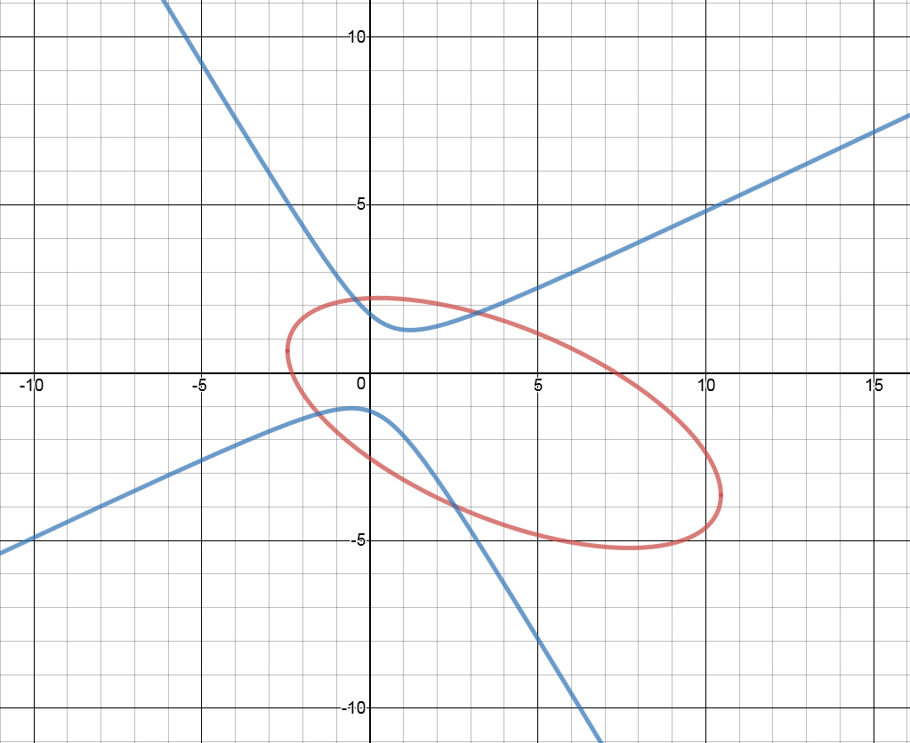
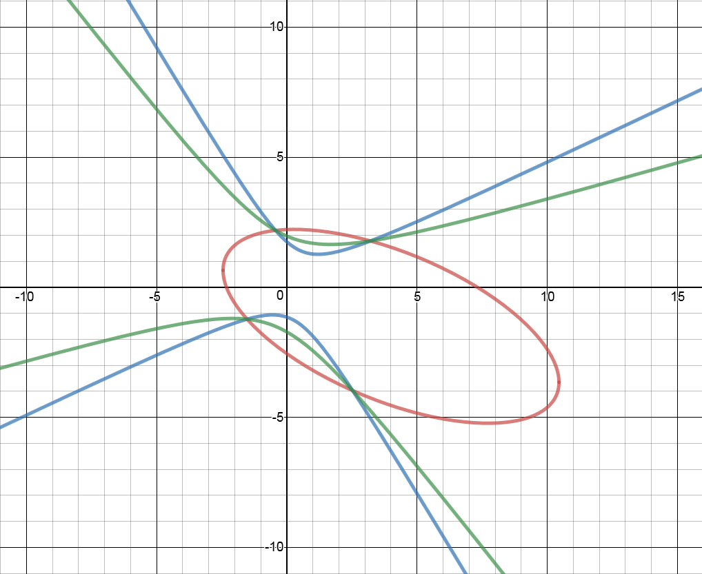
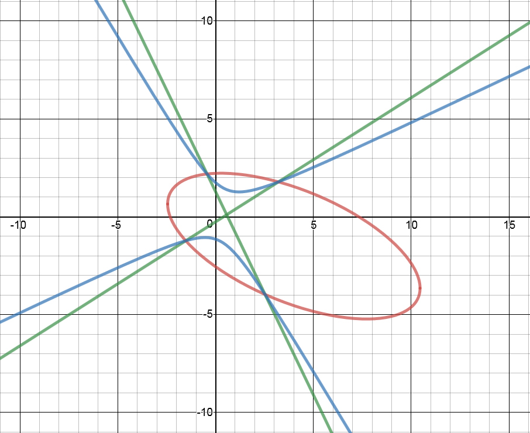

My math chapter this past week was about conics. (ellipses, parabolas, etc.) It said that solving systems of conics (finding the intersection points of two conic equations) was very difficult. I set out to see if there was a simple way, and ended up finding an interesting method for solving conic equations.
The first thing I did was go to a wonderful online graphing calculator I had come across. I then came up with two conic sections at random. The equations were something like this:
x2 + 2xy + 3y2 – 5x + y – 17 = 0
4x2 – 6xy – 5y2 – 2x + 3y + 10 = 0
(These weren't the exact equations I used then, but they are a good, simple example)
I then entered these equations into the graphing calculator, and ended up with something like this:

So far so good. Then I started experimenting. First I tried making a new function by subtracting one equation from the other. I entered an equation like this:
x2 + 2xy + 3y2 – 5x + y – 17 – (4x2 – 6xy – 5y2 – 2x + 3y + 10) = 0
This equation generated a graph like this: (the green line represents the above equation)

"Hmm," I thought, "The green line has a different shape than the blue hyperbola, but it intersects the ellipse at the same points. What if we subtracted the second equation again?"
I tried doing this, and then realized I could simplify things by making an equation like this:
x2 + 2xy + 3y2 – 5x + y – 17 – n(4x2 – 6xy – 5y2 – 2x + 3y + 10) = 0
I tried changing the value of n, and discovered an interesting (but obvious when you think about it) property: when n changes, the shape of the green line changes, but the intersection points do not. I noticed there was a value of n at which the two parts of the green hyperbola came so close together that it looked like two intersecting lines. (This is called a Degenerate Hyperbola) If you look at this graph you'll see what I mean:

The green line is the graph of x2 + 2xy + 3y2 – 5x + y – 17 – n(4x2 – 6xy – 5y2 – 2x + 3y + 10) = 0, where n = -1.9151747333913018
And then suddenly I had an idea: if we can find the value of n that makes the green conic degenerate, then we can easily solve systems of conic equations, because it is very easy to find the intersection between a conic and a line (such as the two lines of a degenerate hyperbola). I set out to write a little program in Javascript to see if this method of solving conics would work. It does, and after a bit of improvements, my program was able to solve any system of conics.
Here is how my program works:
- The user enters the coefficients of the two conic equations. By convention, these are called A,B,C,D,E, and F, where Ax2 + Bxy + Cy2 + Dx + Ey + F = 0
- A value of n is found so that the resulting conic will be degenerate. A conic is degenerate when the determinant of the matrix is equal to 0. Since we want to make this matrix equal zero after n has been distributed, the actual values that get entered into the matrix are (A-na), (B-nb), etc., where A-F are the coefficients of the first equation and a-f are the coefficients of the second equation. Finding a value of n that makes this matrix equal zero is equivalent to solving a cubic function. There is a formula to solve cubics, but at the moment my program simply performs an iterative search to find a suitable value of n.
- Once the value of n has been found, the program distributes n and simplifies the equation, producing a new set of coefficients.
- If the xy-coefficent (B) is not zero, the conic is rotated to a new coordinate system, removing the B term
- The equations of the lines of the hyperbola are calculated, first in the rotated coordinate system. Then they are rotated back to the standard coordinate system.
- The equation of the first line is substituted into one of the original conic equations. This produces a quadratic equation in terms of x. The quadratic formula is used to find the x-coordinates of two intersection points.
- The x-values generated in the previous step are substituted into the equation for the line, producing two y-values
- Steps 6 and 7 are repeated for the second arm of the hyperbola, generating another set of intersection points.
- The intersection points are returned to the user.
There are a few other parts of the process (for instance, sometimes the degenerate conic is actually a degenerate parabola or ellipse instead of a hyperbola) but this is the basic method by which my program calculates the intersection points of two conic equations.
Now you may be wondering, "Is this some new method of solving conics?" I have asked this question myself, and I have not found an entirely satisfactory answer. There are many different ways of solving general systems of conics. A fairly obvious (but tedious) method is to use the quadratic formula to find the value of y in terms of x, and then substitute these values into the original equation, then solve for x. (You may then need to substitute the x values back again to find the actual y values. I'm not really sure – I haven't tried out this idea very much) Also, I don't know a lot about linear algebra, and there may be other, better ways of solving systems of conics. (My method does involve solving a cubic, after all)
In any case, it doesn't seem like I have discovered something revolutionary. I have found something that seems similar. It is a method for solving quartic equations (equations that contain an x4 term), and says that the method finds "three [degenerate conics] (pairs of lines)" in order to calculate the roots of the equation.
Anyway, even if I didn't make a mathematical discovery, it was a neat project and I learned something about math that wasn't part of my regular course. To wrap things up, I have embedded my solver below so you can try it for yourself! Below that is the Javascript code for the solver.
Comment on Twitter
/*
-------------------------------------------------
GENERAL CONIC SOLVER
-------------------------------------------------
Written by Kerwizzy. (https://github.com/kerwizzy)
Licensed under the terms of the MIT license.
HOW TO USE
1. Create two new instances of class Conic with
the coefficients of your two equations to be
solved. In the instructions below, these will
be called conic1 and conic2.
2. Call conic1.toString() and conic2.toString() to
pretty-print your equations.
3. Call conic1.intersect(conic2) to find the
intersection points. This method returns an
object of the form:
{
points:<array of intersection points
represented as two-element arrays>,
debugData:<debug data object>
}
Read the code below for what values are stored in
debugData.
*/
class Conic {
constructor (a,b,c,d,e,f) {//ax^2+bxy+cy^2+dx+ey+f = 0
this.a = a
this.b = b
this.c = c
this.d = d
this.e = e
this.f = f
}
toString() {
var a = this.a
var b = this.b
var c = this.c
var d = this.d
var e = this.e
var f = this.f
var signA = (a >= 0 ? "+" : "-")
var signB = (b >= 0 ? "+" : "-")
var signC = (c >= 0 ? "+" : "-")
var signD = (d >= 0 ? "+" : "-")
var signE = (e >= 0 ? "+" : "-")
var signF = (f >= 0 ? "+" : "-")
var out = ""
if (a != 0) {
out += signA+" "+Math.abs(a)+"x<sup>2</sup> "
}
if (b != 0) {
out += signB+" "+Math.abs(b)+"xy "
}
if (c != 0) {
out += signC+" "+Math.abs(c)+"y<sup>2</sup> "
}
if (d != 0) {
out += signD+" "+Math.abs(d)+"x "
}
if (e != 0) {
out += signE+" "+Math.abs(e)+"y "
}
if (f != 0) {
out += signF+" "+Math.abs(f)+" "
}
if (out.substr(0,1) == "+") {
out = out.substr(2) //Remove the "+ " at the beginning of the string
}
return out + "= 0"
}
get type() {//-1 = ellipse, 0 = parabola, 1 = hyperbola
var a = this.a
var b = this.b
var c = this.c
var d = this.d
var e = this.e
var f = this.f
var determinant = b*b-4*a*c
if (determinant < 0) {
return -1
} else if (determinant == 0) {
return 0
} else {
return 1
}
}
static findZero(f,startVal) {
var x = startVal
var i = 0
var done = false
var mDelta = 0.000001
while (!done) {
var m = (f(x+mDelta)-f(x))/(mDelta)
var fx = f(x)
if (fx > 0) {
x -= fx/m
} else {
x += Math.abs(fx)/m
}
if (Math.abs(fx) < 0.0000001 || i > 100) {
done = true
}
i++
}
return x
}
swap() { //return a new conic with x and y swapped
var a = this.a
var b = this.b
var c = this.c
var d = this.d
var e = this.e
var f = this.f
return new Conic(c,b,a,e,d,f)
}
get isLine() {
return (this.a == 0 && this.b == 0 && this.c == 0)
}
lineIntersect(m,n) {
var a = this.a
var b = this.b
var c = this.c
var d = this.d
var e = this.e
var f = this.f
//These variables are the A,B, and C in Ax^2+Bx+C = 0
var A = a+b*m+c*m*m
var B = n*b+2*m*n*c+d+e*m
var C = c*n*n+n*e+f
var discriminant = B*B-4*A*C
if (discriminant < 0) {
return []
} else if (discriminant == 0) {
var x1 = (-B/(2*A))
var y1 = m*x1+n
return [[x1,y1]]
} else {
var x1 = (-B+Math.sqrt(discriminant))/(2*A)
var x2 = (-B-Math.sqrt(discriminant))/(2*A)
var y1 = m*x1+n
var y2 = m*x2+n
return [[x1,y1],[x2,y2]]
}
}
intersect(conic) {
var outPoints = []
var debugData = {}
if (this.isLine && !conic.isLine) {
var m = -this.d/this.e
var b = -this.f/this.e
outPoints = conic.lineIntersect(m,b)
} else if (!this.isLine && conic.isLine) {
var m = -conic.d/conic.e
var b = -conic.f/conic.e
outPoints = this.lineIntersect(m,b)
} else if (this.isLine && conic.isLine) {
/*
mx+b
jx+k
mx+b=jx+k
mx+b-k=jx
b-k = jx-mx
b-k = x(j-m)
x = (b-k)/(j-m)
*/
var m = -this.d/this.e
var b = -this.f/this.e
var j = -conic.d/conic.e
var k = -conic.f/conic.e
var x = (b-k)/(j-m)
var y = m*x+b
outPoints = [[x,y]]
} else {
//STEP 1: Get the coefficients
var A = this.a
var B = this.b
var C = this.c
var D = this.d
var E = this.e
var F = this.f
var a = conic.a
var b = conic.b
var c = conic.c
var d = conic.d
var e = conic.e
var f = conic.f
//STEP 2: Solve for N
//First create a function that calculates the determinant of the matrix for a certain value of n
var determinantFunction = function(n) {
var a1 = A-n*a
var b1 = (B-n*b)/2
var c1 = C-n*c
var d1 = (D-n*d)/2
var e1 = (E-n*e)/2
var f1 = F-n*f
var Q = (a1*c1*f1)+(b1*e1*d1)+(b1*e1*d1)-(a1*e1*e1)-(b1*b1*f1)-(d1*d1*c1)
return Q
}
//Then use the determinant function and the iterative zero-finding algorithm to find a value of n that makes the determinant = 0
var N = Conic.findZero(determinantFunction,a*A+b*B+c*C)
console.log("n = "+N)
debugData.n = N
//STEP 3: Distribute n to find the new coefficients
var sa = A-N*a
var sb = B-N*b
var sc = C-N*c
var sd = D-N*d
var se = E-N*e
var sf = F-N*f
console.log("Solved Values: "+[sa,sb,sc,sd,se,sf].join(" "))
debugData.solvedValues = [sa,sb,sc,sd,se,sf]
//STEP 4: Calculate the coefficients in the rotated coordinate system
//First calculate the necessary rotation angle
var theta = Math.atan(sb/(sc-sa))/2
debugData.theta = theta
console.log("Rotation Angle (Radians):"+theta)
console.log("Rotation Angle (Slope):"+Math.tan(theta))
//Values of coefficients in rotated equation
//These were copied from http://www.mathamazement.com/Lessons/Pre-Calculus/09_Conic-Sections-and-Analytic-Geometry/rotation-of-axes.html
//Then calculate the coefficents in the new coordinate system. (rb should now be 0)
var ra = (sa+sc)/2+((sa-sc)/2)*Math.cos(2*theta)-(sb/2)*Math.sin(2*theta)
var rb = (sa - sc)*Math.sin(2*theta) + sb*Math.cos(2*theta)
var rc = (sa + sc)/2 + ((sc - sa)/2)*Math.cos(2*theta) + (sb/2)*Math.sin(2*theta)
var rd = sd*Math.cos(theta) - se*Math.sin(theta)
var re = sd*Math.sin(theta) + se*Math.cos(theta)
var rf = sf
//These formulas were copied from http://www.sosmath.com/CBB/viewtopic.php?t=17029
/*
var costheta = Math.cos(theta)
var sintheta = Math.sin(theta)
var ra = sa*costheta*costheta+sb*sintheta*costheta+sc*sintheta*sintheta
var rb = sb*Math.cos(theta*2)+(sc-sa)*Math.sin(theta*2)
var rc = sa*sintheta*sintheta-sb*sintheta*costheta+sc*costheta*costheta
var rd = sd*costheta+se*sintheta
var re = -sd*sintheta+se*costheta
var rf = sf
*/
console.log("Rotated Values: "+[ra,rb,rc,rd,re,rf].join(" "))
debugData.rotatedValues = [ra,rb,rc,rd,re,rf]
//Debug code to make sure the rotation was performed correctly.
var rotatedH = (-rd)/(2*ra)
var rotatedK = (-re)/(2*rc)
console.log("Rotated h,k: "+rotatedH+","+rotatedK)
debugData.rotatedH = rotatedH
debugData.rotatedK = rotatedK
console.log("Dist: "+Math.sqrt(rotatedH*rotatedH+rotatedK*rotatedK))
var h = rotatedH*Math.cos(-theta)-rotatedK*Math.sin(-theta)
var k = rotatedH*Math.sin(-theta)+rotatedK*Math.cos(-theta)
console.log("Dist: "+Math.sqrt(h*h+k*k))
console.log("h,k: "+h+","+k)
debugData.h = h
debugData.k = k
//STEPS 5-8: Calculate the equations of the lines, rotate, and substitute
//First figure out what kind of degenerate conic it is the discriminant (b^2-4ac)
var discriminant = sb*sb-4*sa*sc
if (discriminant > 0) { //hyperbola
console.log("HYPERBOLA")
var rotatedSlope1 = Math.sqrt(Math.abs(ra/rc))
var rotatedSlope2 = -rotatedSlope1
var m1 = Math.tan(Math.atan(rotatedSlope1)-theta)
var m2 = Math.tan(Math.atan(rotatedSlope2)-theta)
var b1 = -m1*h+k
var b2 = -m2*h+k
var l1Points = this.lineIntersect(m1,b1)
var l2Points = this.lineIntersect(m2,b2)
outPoints = l1Points.concat(l2Points)
} else if (discriminant == 0) {//degenerate parabola
var swapCoords = false
var intersectionConic
if (ra == 0) {//opens x
console.log("X PARABOLA")
intersectionConic = this
} else if (rc == 0) {
console.log("Y PARABOLA")
swapCoords = true;
var tempra = ra //swap the x and y values so we don't end up with vertical lines.
ra = rc
rc = tempra
var temprd = rd
rd = re
re = temprd
intersectionConic = this.swap()
} else {
console.log("THIS WASN'T SUPPOSED TO HAPPEN! FIXME!")
outPoints = [[0,0]]
}
var pa = rc // /rd <- rd may always be 0?
var pb = re // /rd
var pc = rf // /rd
var rotatedY1 = (-pb+Math.sqrt(pb*pb-4*pa*pc))/(2*pa)
var rotatedY2 = (-pb-Math.sqrt(pb*pb-4*pa*pc))/(2*pa)
var rotatedX1 = 0
var rotatedX2 = 0
var x1 = rotatedX1*Math.cos(-theta)-rotatedY1*Math.sin(-theta)
var y1 = rotatedX1*Math.sin(-theta)+rotatedY1*Math.cos(-theta)
var x2 = rotatedX2*Math.cos(-theta)-rotatedY2*Math.sin(-theta)
var y2 = rotatedX2*Math.sin(-theta)+rotatedY2*Math.cos(-theta)
var m = Math.tan(theta) //Is this supposed to be negative? It seems like it should be positive...
var b1 = -m*x1+y1
var b2 = -m*x2+y2
var l1Points = intersectionConic.lineIntersect(m,b1)
var l2Points = intersectionConic.lineIntersect(m,b2)
var out = l1Points.concat(l2Points)
if (swapCoords) {
for (var i = 0; i<out.length; i++) {
var xVal = out[i][0]
var yVal = out[i][1]
out[i][0] = yVal
out[i][1] = xVal
}
}
outPoints = out
} else if (discriminant < 0) {//degenerate ellipse
console.log("ELLIPSE")
var valueAtPoint = this.a*h*h+this.b*h*k+this.c*k*k+this.d*h+this.e*k+this.f
if (Math.abs(valueAtPoint) < 0.001) {
outPoints = [[h,k]]
} else {
outPoints = []
}
} else {
console.log("Couldn't solve degenerate conic.")
outPoints = []
}
}
var clippedPoints = []
for (var j = 0; j<outPoints.length; j++) {//Clip out points that are too far away, as they probably result from rounding errors.
var x = outPoints[j][0]
var y = outPoints[j][1]
if (x+y < 500000) {
clippedPoints.push([x,y])
}
}
//STEP 9: Return the values.
return {points:clippedPoints,debugData:debugData}
}
}